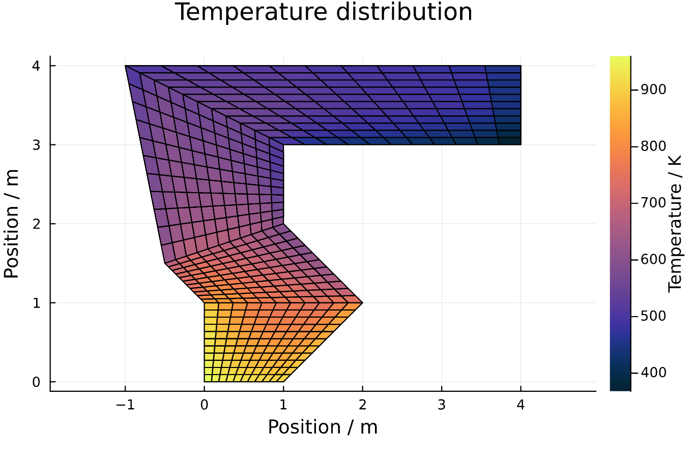

Calculate heat transfer
In this section we will solve a radiation heat transfer problem using the geometry which was generated and sampled in the previous sections. The most important thing when solving radiation heat transfer problems is to correctly define all of the boundary conditions and known information. The properties of the participating medium was specified before the ray tracing so this is already fixed. The remaining properties which need to be fixed are:
- Emissivities of all solid walls
- A temperature or a heat source term for each element
First we set the emissivities. Here we set all the solid walls of all four subEnclosures to have an emissivity of one. The row number is the subenclosure number (in the order they were added).
epsw_in = zeros(mesh1.N_subs,4)
epsw_in[1,mesh1.solidWalls[1]] .= 1.0
epsw_in[2,mesh1.solidWalls[2]] .= 1.0
epsw_in[3,mesh1.solidWalls[3]] .= 1.0
epsw_in[4,mesh1.solidWalls[4]] .= 1.0Next, we define the fixed temperatures and source terms. We start by specifying the walls. We will set a hot wall temperature of 1000.0 Kelvin at the lower subenclosure and leave the remaining walls at 0.0 Kelvin (no emission). This means all wall temperatures will be known and the result of the calculation will be the heat source (or sink) term of the walls in Watts. When the temperature is specified as non-negative, this is the one which will be used. If the temperature is specified as negative, then the source term will be used. In any case the source term must be specified (to ensure consistent inputs), but it is only used if the temperature is set to negative.
Tw_hot = 1000.0
Tw_in = zeros(mesh1.N_subs,4)
qw_in = zeros(mesh1.N_subs,4)
Tw_in[1,mesh1.solidWalls[1]] .= Tw_hot
Tw_in[2,mesh1.solidWalls[2]] .= 0.0
qw_in[3,mesh1.solidWalls[3]] .= 0.0
qw_in[4,mesh1.solidWalls[4]] .= 0.0Next, the same must be repeated for the gas volumes. The gas volume known information is specified on a subenclosure basis but the results will be returned at full cell-level mesh resolution. We set the temperature of the gas volumes to be unknown by specifying a negative temperature. The source terms are all set to zero, corresponding to 'radiative equilibrium', meaning that no other modes of heat transfer are present.
Tg_in = zeros(mesh1.N_subs) .- 1
qg_in = zeros(mesh1.N_subs)Now we are ready to solve the heat transfer problem! We will use the function 'steadyState' to calculate the equilibrium temperatures and source terms.
@time begin
Tw, Tg, qw, qg = steadyState(mesh1,FSS,FSG,FGS,FGG,
epsw_in,gas1,
Tw_in,Tg_in,qw_in,qg_in);
endAnd lastly, let's plot the temperature field. This function takes the mesh and the temperature vectors as input (the wall temperatures are optional). Apart from the plot it also returns the gas temperatures in the form of an array:
- The first dimension of the Tg_array are the subenclosures.
- The next dimensions are the x- and y-splits of each subenclosure.
Tg_array = plotTemperatureField(mesh1,Tg_rig) #,Tw_rig); # optional wall temperaturesEven though there is no flow in the domain and the gas is strongly cooled be the cold walls the radiation from the hot wall heats the entire domain due to the absorption and reradiation in the gas.
